Localized Policy - OSPF
Task 1: OSPF Policy
In this task, you will configure a localized control policy on the SD-WAN Edge router to advertise OSPF routes into the SD-WAN overlay.
🛠 Set OSPF Metric
Log in to SD-WAN Manager from your browser with:
- Username:
admin - Password:
C1sco12345
Step 1
In Site 300, OSPF is pre-configured between core router Site300-Core-VPN10 and Site300-cE1 on the service side. Mutual redistribution between OMP and OSPF is also enabled.
Step 2
Verify the OSPF neighbor:
- Navigate to Monitor > Devices > Site300-cE1 > Real Time > OSPF Neighbors
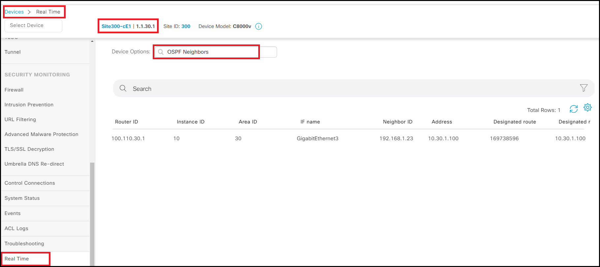
Step 3
Verify the local route 131.131.131.0/24 is installed as an OSPF route in the VPN 10 routing table:
- Navigate to Monitor > Devices > Site300-cE1 > Real Time > IP Route
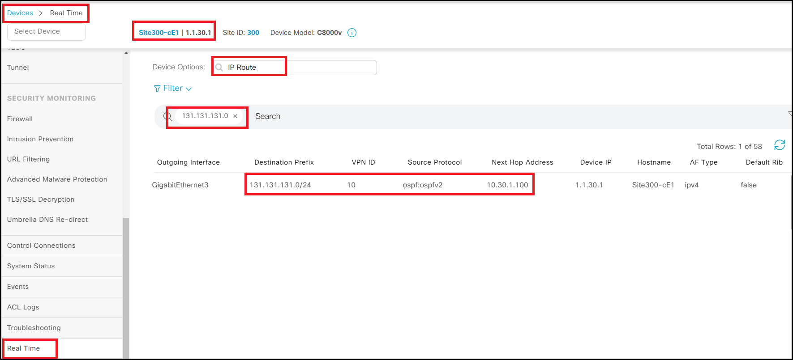
Step 4
Verify the OMP route 131.131.131.0/24 is installed at the remote site:
- Navigate to Monitor > Devices > Site400-cE1 > Real Time > IP Route
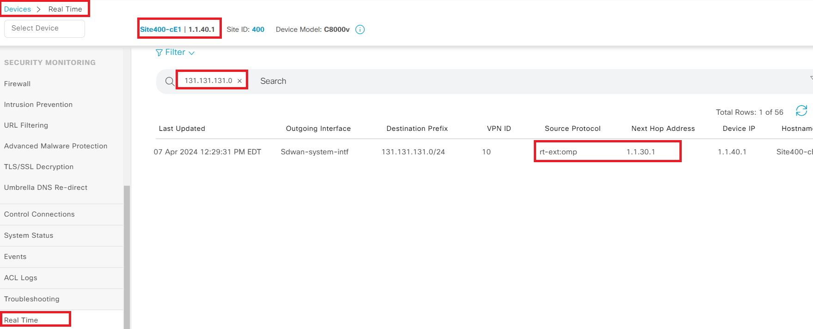
Step 5
Verify OMP routes are being redistributed into OSPF and installed on Site300-Core-VPN10:
-
Open mRemoteNG from the jumphost desktop
-
Select Site300-Core-VPN10 from the pre-configured PuTTY session
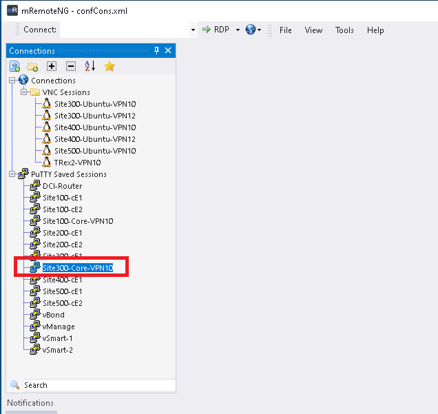
💡 Note: If you don’t see pre-configured connections, check View > Connections
- Log in with:
- Username:
cisco -
Password:
cisco -
Run the command: show ip route
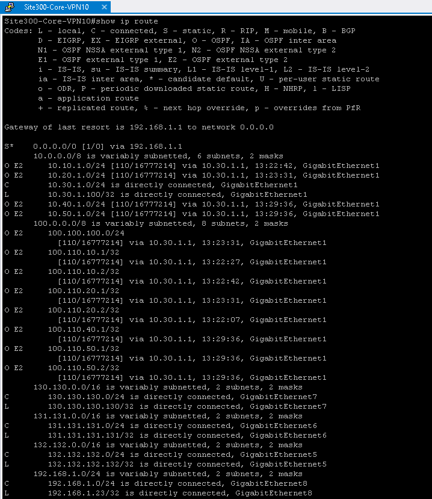
✅ Note: Redistributed routes appear as E2 routes with a default metric.
➕ Add Route Policy to Set OSPF Metric (1000)
Step 6
-
Navigate to Configuration > Policies > Custom Options > Localized Policy > Route Policy
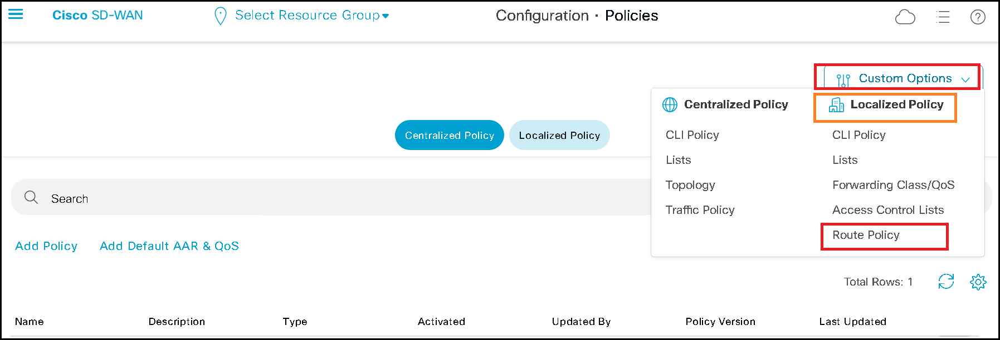
-
VIP18-Route-Policy is pre-configured to set OSPF metric to 1000. Click ... to view the policy details.
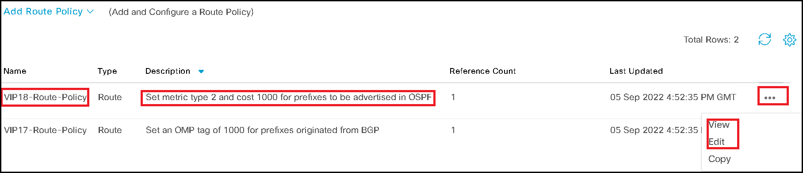
-
To attach the route policy:
-
Navigate to Configuration > Policies > Localized Policy
- Select pre-configured policy Site300-Local-Policy-v1
-
Click ... > Edit
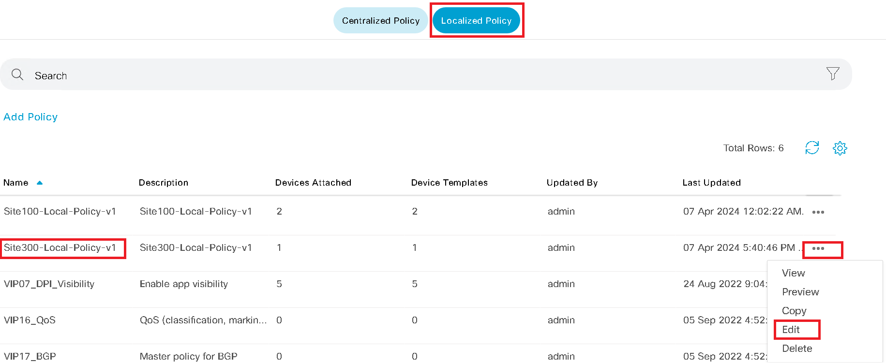
-
Select Route Policy > Add Route Policy > Import Existing
-
Select VIP18-Route-Policy from the Policy drop-down, then click Import
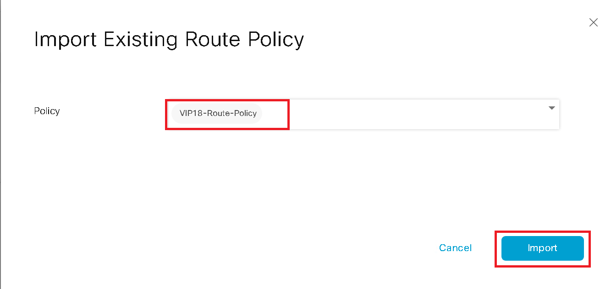
-
Click Save Policy Changes to push configuration Site300-cE1-v1
-
Apply the Route Policy to OSPF:
-
Navigate to Configuration > Templates > Feature Templates
- Search for VIP18-OSPF-Neighbor and select Edit
- Under REDISTRIBUTE, click the pencil icon to edit omp redistribution
- In Route Policy, select Global, and configure
VIP18-Route-Policy
⚠️ Note: Make sure to enter the name exactly as shown.
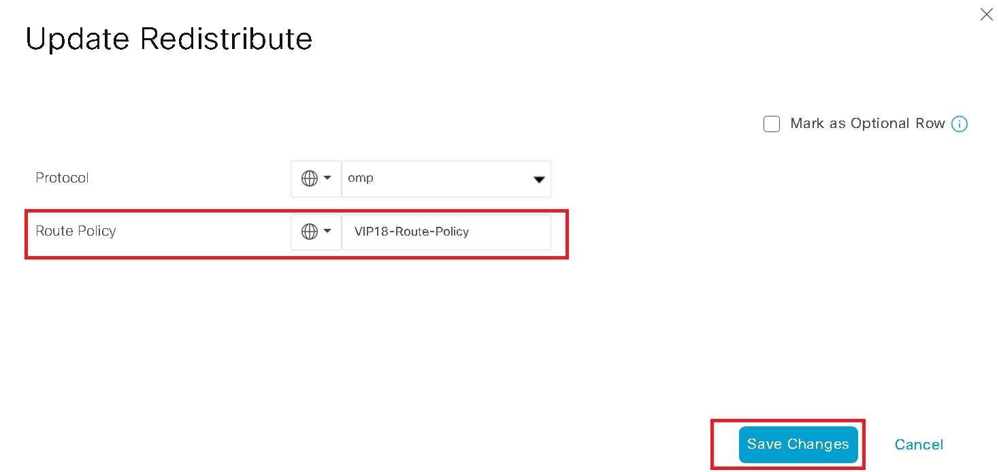
-
Save the template changes and push the configuration to Site300-cE1
-
Log in to Site300-Core-VPN10 again (Username:
cisco, Password:cisco) and run: show ip route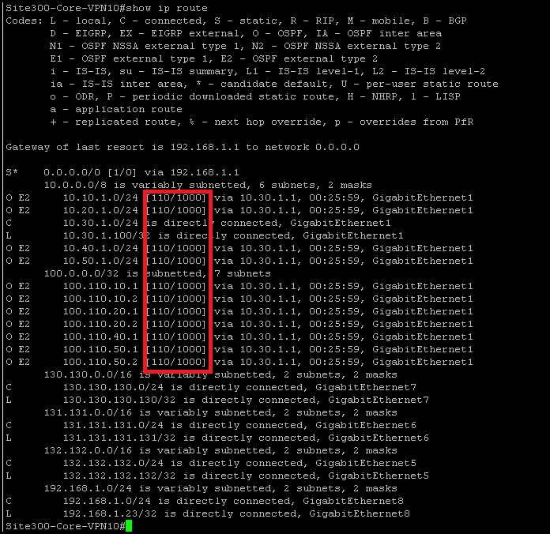
✅ Note: OSPF E2 route now has metric 1000
🚫 Block Default Route on Service Side
Currently, Site300-Core-VPN10 is incorrectly advertising a default route to Site300-cE1.
You’ll now block this using a Route Policy.
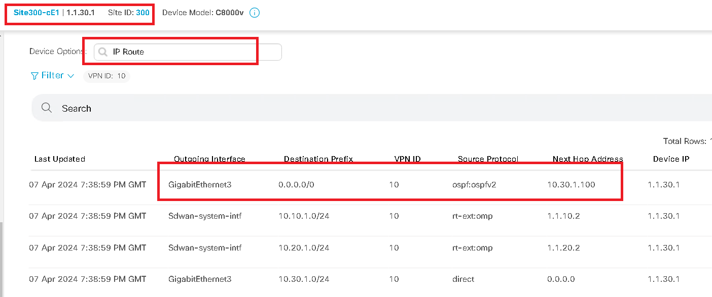
Step 7
-
Navigate to Configuration > Policies > Custom Options > Localized Policy > Route Policy
-
Click Add Route Policy
-
Create a new route policy named OSPF-LAN with two sequence rules:
-
Sequence 1: Match Address = default, Action = Reject
-
Sequence 2: Match Everything, Action = Accept
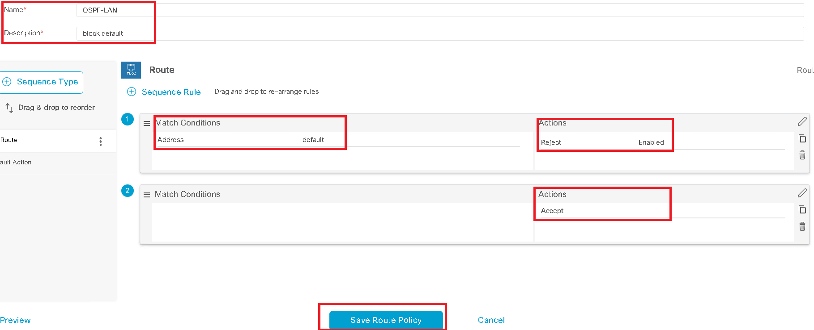
-
Attach the OSPF-LAN route policy:
-
Navigate to Configuration > Policies > Localized Policy
- Select pre-configured policy Site300-Local-Policy-v1
- Click ... > Edit
- Select Route Policy > Add Route Policy > Import Existing
-
Choose OSPF-LAN from the drop-down and click Import
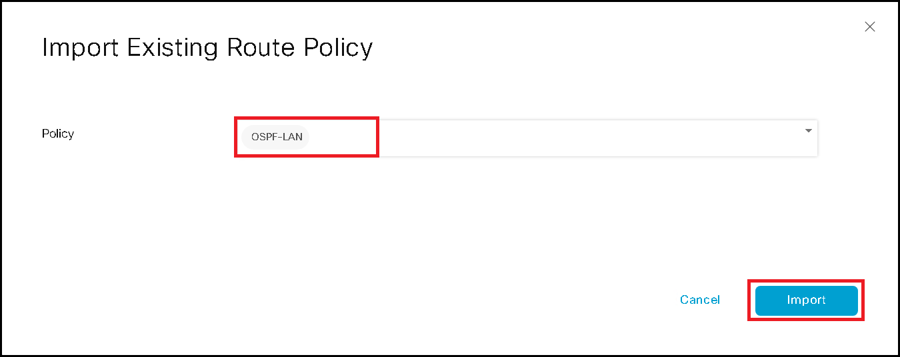
-
Click Save Policy Changes to push configuration to Site300-cE1-v1
⏳ Note: Wait until configuration push completes
-
Apply the Route Policy to OSPF:
-
Navigate to Configuration > Templates > Feature Templates
- Search for VIP18-OSPF-Neighbor and click Edit
- Under ADVANCED, set Policy Name (Global) to
OSPF-LAN
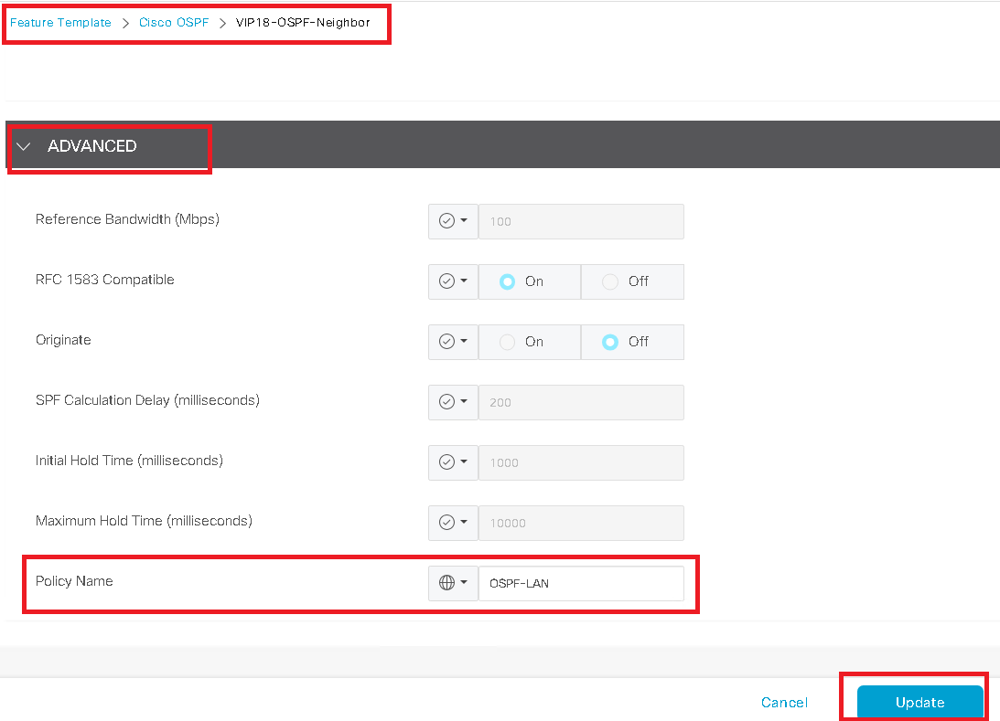
⚠️ Note: Make sure to enter the name exactly
-
Save the template and push the configuration to Site300-cE1
-
Verify the default route is now blocked:
-
Navigate to Monitor > Devices > Site300-cE1 > Real Time > IP Route
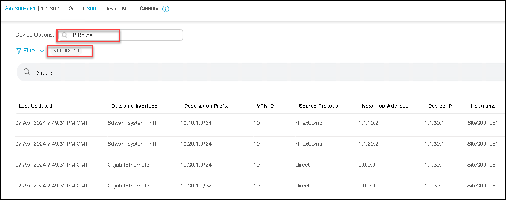
❓ Question to Think About
Can you think of alternate options to prevent the default route from being advertised to OMP?